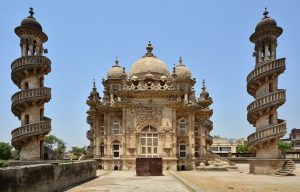
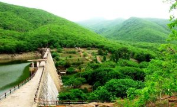

Girnar Hill
Girnar, also known as Girinagar or Revatak Parvata, is a group of mountains in the Junagadh District of Gujarat, India, situated near Junagadh. Is considered older than the Himalayas, Girnar, the mountain and its range are considered sacred. It is an important pilgrimage site for both Hindus , who gather here during the Girnar Parikrama festival. Later on some Jain temples were also built, some of which are very recent. Girnar is one of the five major ‘tirthas’ attributed to the ‘panch kalyanakas’ of various ‘Jain tirthankaras’. Girnar is also significant among Shiva devotees for the so-called “mystic space-time” of the mountain range, with the presence and turnover of different sects of Sadhu Babas, Nath sect and others. Flora and fauna fairs are also held at the mountains, such as the Maha Shivratri fair. Different Jain Tirthankaras and monks have in the past visited and practiced severe penance at the peaks of Girnar. It hosts a number of temples and some historical spots across its range. Amidst the lush green Gir Forest, the mountain range serves as the hub of religious activity.
Mahabat Maqbara
Mahabat Maqbara Palace, also Mausoleum of Bahaduddinbhai Hasainbhai, is a mausoleum in Junagadh, India, that was once home to the Muslims rulers the Nawabs of Junagadh. The city of Junagadh has other 18th-century mausoleums built by the nawabs in the area around Chitkana Chowk.
Damodar Kund
Damodar Kund is one of the sacred lakes as per Hindu beliefs, which is located at the foothills of Girnar hills, near Junagadh in Gujarat, India. It is considered holy, as per Hindu mythology and many Hindus prefer to bathe and immerse the ashes and the bones left after cremation of dead bodies, here at Damodar Kund due to a belief that the departed souls would get moksha here.It may be mentioned here other such famous places for immersion of ashes and bones ( Hindu rite of asthi-visarjana ) are in Ganga at Haridwar and Triveni Sangam at Prayag. The water of the lake has properties of dissolving the bones.The lake is 257 ft long and 50 ft broad and only 5 feet deep. It is surrounded by a well built ghat.The steps for going up the Girnar hills start near Damodar Kund.
Willingdon Dam
The dam is built on the river Kalwa at the foot of the hill from where it originates. It was built as a reservoir for drinking water for the people of Junagadh. It was named after Lord Willingdon, the then Governor of India. Near the dam, the steps go up to 2,779 feet (847 m) high to the famous shrine of Jamiyal shah Datar, where both Hindu and Muslim devotees share their faith.
Sasan Gir Forest
Gir is one of India’s oldest sanctuaries, and is synonymous with the majestic Asiatic lion (Panthera leo persica). The only place in India to see this animal, this park can take legitimate pride in saving an endangered species, which was at the threshold of extinction in the start of the twenty-first century, by providing it a more secured habitat. The Gir ecosystem falls in Biogeography Zone-4 (the semi arid) and Biogeography Province 4-B. Gujarat Rajwara is the last remaining abode of the Asiatic Lion, Panthera leo persica. The Government of Gujarat has declared an area of 1412.1 sq km as Protected Area (PA) which comprises 258.7 sq km as National Park and 1153.4 sq km as Sanctuary. Besides this 470.5 sq km of forest area forms a buffer Zone as reserve, protected and unclassified forest. Thus, a total area of 1882.6 sq km makes up the Gir forest. For Booking Gir Jungle Trail & Devaliya Safari : http://girlion.in/
Sakkarbaugh Zoo
Sakkarbaug Zoological Garden also known as Sakkarbaug Zoo or Junagadh Zoo is a 200-hectare (490-acre) zoo that opened in 1863 at Junagadh, Gujarat, India. The zoo provides purebred Asiatic lions for the Indian and the international endangered species captive breeding program for the critically endangered species. Wild free ranging Asiatic lions have become extinct over most of Asia and are today found only in the nearby Gir Forest.
Sakkarbaugh Zoo Timings :
All days of the week except Wednesday
9:00 AM – 6:30 PM